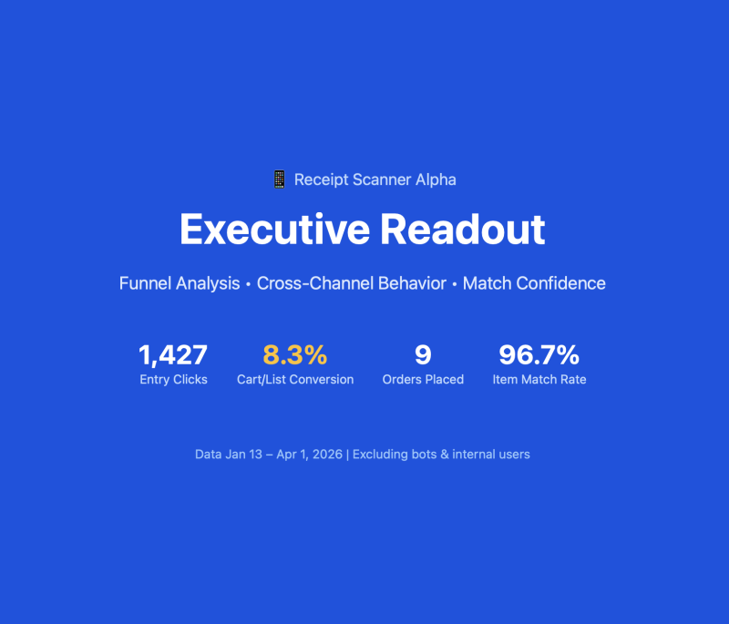
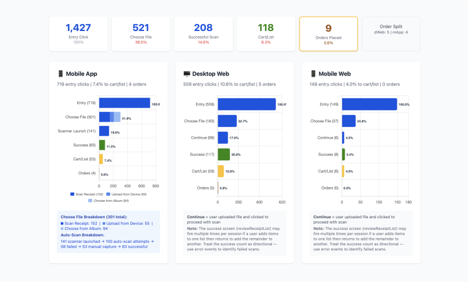
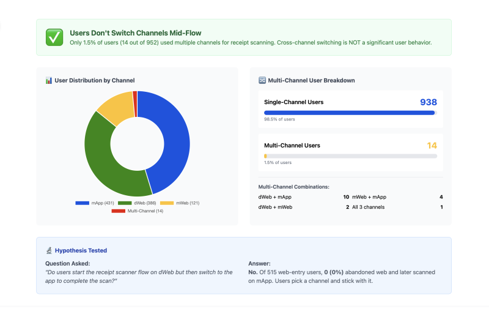
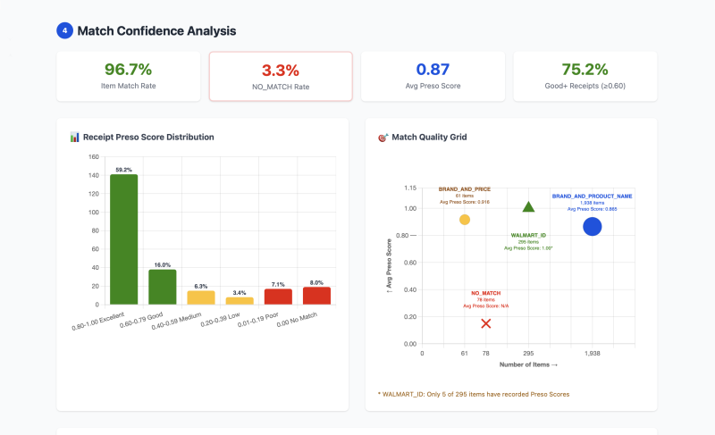
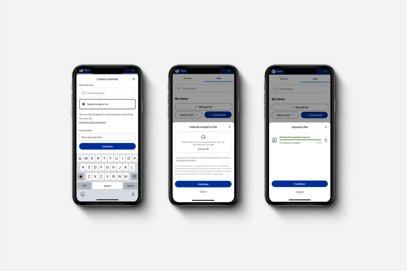

Simplifying Repeat Purchasing for Businesses

• The Bigger Picture
Context
Improving the e-commerce experience by moving it beyond simple list management into a scalable system that supports repeat orders, collaboration, and future purchasing needs.
The goal was to reduce friction in how businesses create, manage, and reuse purchasing lists across desktop and mobile.
• What Was Broken
Problem
As businesses grow, buying becomes an ongoing operational process.
Shopping Customers
Business customers manage recurring purchases using fragmented tools like spreadsheets, notes, saved carts, and past receipts. As a result, they struggle to organize purchase, reuse previous orders, and collaborating with others.
Business
As customers scale, the current system does not fully support repeat purchasing or multi-user workflows, limiting efficiency and long-term growth potential.
• Seat At The Table
Role

Led the end-to-end design of the buying list experience.
Defined interaction patterns across desktop and mobile workflows.
Designed systems for list creation, reuse, and collaboration.
Shaped early direction toward procurement-ready workflows.
Collaborated with product and engineering stakeholders.
• Reading Between Lines
Insight
“Business customers don’t shop—they manage purchasing as an ongoing workflow.”
Synthesis from B2B purchasing behavior.
• Signals From The Noise
Key Insights
Significant time is spent rebuilding lists instead of reusing them.


Users need a list generator to reuse, structure, and automate purchases efficiently.


Structured Purchasing
Buying follows repeatable patterns rather than open-ended exploration, making consistency and clarity essential.
Fragmented Workflows
Users depend on external tools like spreadsheets and notes to track and manage orders.
Collaborative Decisions
Purchasing involves multiple stakeholders, requiring coordination across roles and teams.
List Rebuilding
Valuable time is lost recreating order lists instead of reusing existing ones.
Scalable Systems
Growth demands better reuse, clear structure, and automation to maintain efficiency.
Cost Focus
As operations scale, optimizing spend becomes a critical priority.
• Where Ideas Landed
Solution


A set of connected improvements focused on turning fragmented purchasing behaviors into a structured, reusable, and collaborative system.
Structured List Creation
Enable list creation with manual input.
List generation from receipt scanner.
Unstructured list from multiple file uploads.
Prioritized desktop workflows for bulk and unstructured data.
Item Matching Optimization
Matched uploaded items against catalog products.
Suggested alternative items aligned with lower pricing goals.
Helped users make more cost-efficient purchasing decisions.
Cross-Platform Workflow
Desktop for creation, upload, and bulk edits.
Mobile for quick access, review and lightweight updates.
Ensured continuity across devices to support purchasing behavior.
Collaborative List Management
Enabled shared access to purchasing lists.
Supported editing, updating, and reuse across users.
Designed lists as a living, collaborative system.
Foundation for Procurement
Designed scalability for repeat purchasing systems.
Role-based permissions for specific users.
Scalable future approval workflows.
• Insight Into Form
Design Highlights


Reduced friction in rebuilding repeat orders.
Supported structured and unstructured input workflows.
Enabled multi-user collaboration across purchasing tasks.
Balanced usability with long-term system scalability.
• Moving The Needle
Impact
Project Outcome
Stakeholder alignment on long-term purchasing system vision.
Improvements to faster list creation and reuse.
Increased repeat and subscription-based purchases.
Scalability toward procurement workflows.
• Ongoing Limitations
Constraints
Inconsistent product data affected item matching reliability.
B2B platform complexity slowed feature rollout compared to B2C systems.
Role-based permissions added complexity (admin, buyer, guest access).
Limited prior research required defining user behavior during design.

• Lessons Worth Keeping